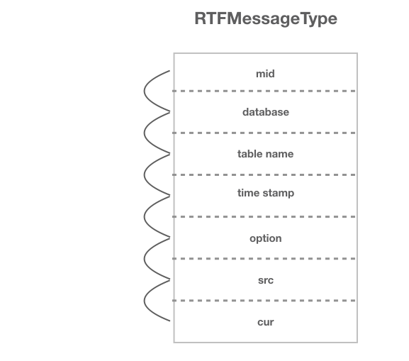
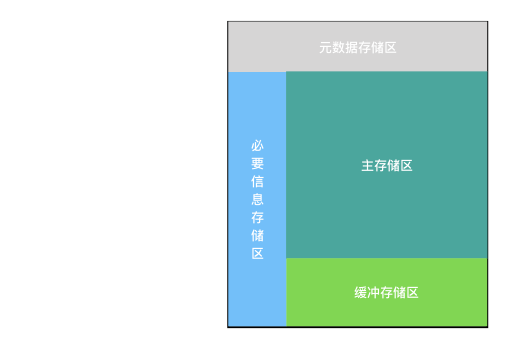
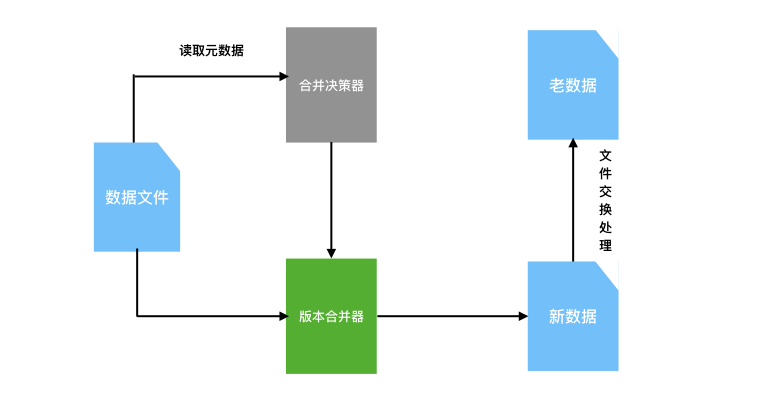

技术概要¶
目前常用的实时计算引擎包括storm，spark streaming，flink都是在追求高性能的计算。而RTF则另辟其径，出于对数据存储层面的考虑，实现了通过文件系统而达到数据的实时性，下面将会从多个角度来介绍RTF的技术核心。
数据实时读取¶
在实时数据读取方面我们需要提到主备复制，它的工作原理非常简单。从上层来看，复制分成三步：
master将改变记录到二进制日志(binary log)中（这些记录叫做二进制日志事件，binary log events，可以通过show binlog events进行查看）
slave将master的binary log events拷贝到它的中继日志(relay log)；
slave重做中继日志中的事件，将改变反映它自己的数据。

消息格式¶
我们将从binlog日志中解析的数据封装为特定的message格式：

mid：读取binlog日志时的事务id，具有严格的顺序性和唯一性，按照读出的先后递增。
database：mysql中的库名
tablename：mysql中对应库下的表名
time stamp：从binlog读取这条message的时间戳
option：数据库中这条数据的改变类型，包括insert，update和delete
src：改变前数据状态，当option为insert时为null
cur：改变后数据状态，当option为delete时为null
存储单元¶

我们定义了一个数据的存储单元，其中包括了元数据存储区，必要信息存储区，主存储区和缓冲存储区四个部分。
在文件头的元数据存储区中，存储了一些元数据的信息，包括描述主存储区和缓冲存储区的数据信息。
位于元数据存储区的下方是主存储区，也是整个存储单元的主要部分，其中存放了数据的全量信息。
文件尾部的缓冲存储区是一个实时数据存储区，当RTFWriter写入数据时，被写入的数据将会被储存在缓冲存储区中，并按照定义的合并规则与主存储区的数据进行合并。
左侧的必要信息存储区则存储了数据的一些例如version这样的信息。这样一个数据存储单元是RTF技术的基础，也是核心的一个部分。
版本合并¶

由于需要提高数据查询性能，当缓冲存储区判定数据写入增多之后（默认会给出一个经验值，数据量可以根据用户自身需求去定义），缓冲存储区将会把多版本的数据进行上卷。但是出于对资源消耗的考虑，如果每次都将缓冲存储区的内容与主存储区合并开销将是巨大的，所以需要根据规则将缓冲存储区的数据分批上卷。事实上，我们设计了合并决策器，它将会识别出最大的N个文件，RTFWriter在每次写入时，会对元数据进行读取，并将元数据交给合并决策器，而合并决策器则会根据决策的算法判断是否需要与主存储区的数据进行合并。在决策之后，需要被合并的文件将会被版本合并器接收并进行合并操作，并进行文件的交换处理，用新版本数据替换掉老版本数据。为了降低存储的压力，RTF表将会丢弃n天前的数据。